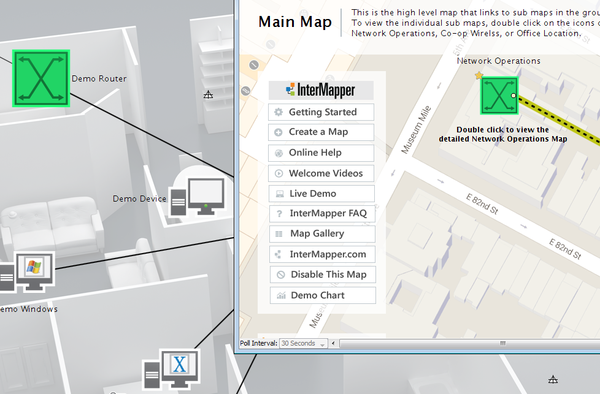

Use this on-line manual to learn about
how to get InterMapper up and running
quickly
Use this manual to learn about how to get InterMapper up and running quickly, and to get detailed information about specific features of the program.
InterMapper has several components that work together to help you understand what's happening on your network:
The core functionality of the product that gathers data about your network, and provides polling, alerting, notifications about its operation.
Uses NetFlow, sFlow and J-Flow data to provide detailed information about the kinds of data flowing through the network.
Several additional components that enhance InterMapper. Includes access to external authentication servers and a PostgreSQL database.
A GUI application that allows you to view and configure your InterMapper system from any location.
In addition, you can customize InterMapper's operation in a number of ways. The Developer Guide/Software Development Kit is described separately.
Please give us comments at the address listed below. Thanks!